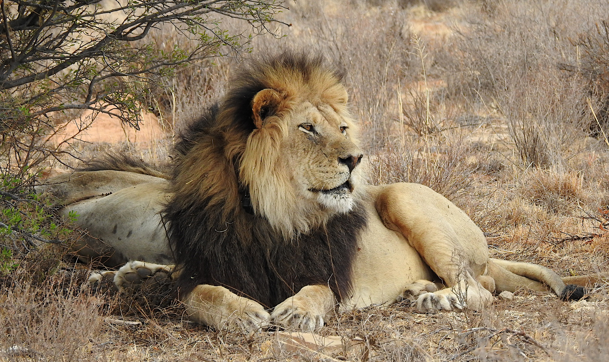

Los leones son mamíferos carnívoros pertenecientes a la familia Felidae y al género Panthera. Son conocidos por su majestuosa melena en los machos, que varía en color desde el marrón claro hasta el negro, y por su distintivo rugido que puede ser escuchado a largas distancias.
Físicamente, los leones son robustos y musculosos, con cuerpos ágiles y patas fuertes que les permiten correr a gran velocidad durante la caza. Son cazadores especializados en presas grandes, como cebras, ñus, antílopes y búfalos, y utilizan tácticas de caza cooperativa en grupo para aumentar las posibilidades de éxito.
A diferencia de otros grandes felinos, los leones viven en grupos sociales llamados manadas o prides, que están liderados por hembras. Las hembras son las cazadoras principales y suelen permanecer en la misma manada durante toda su vida, mientras que los machos jóvenes son expulsados cuando alcanzan la madurez.
